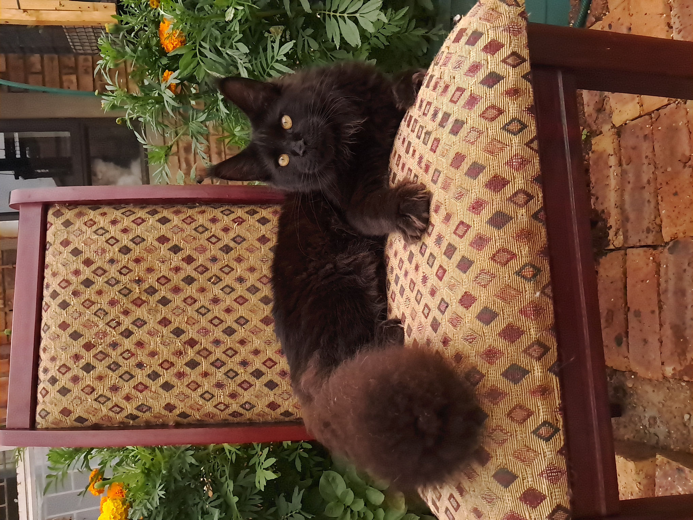
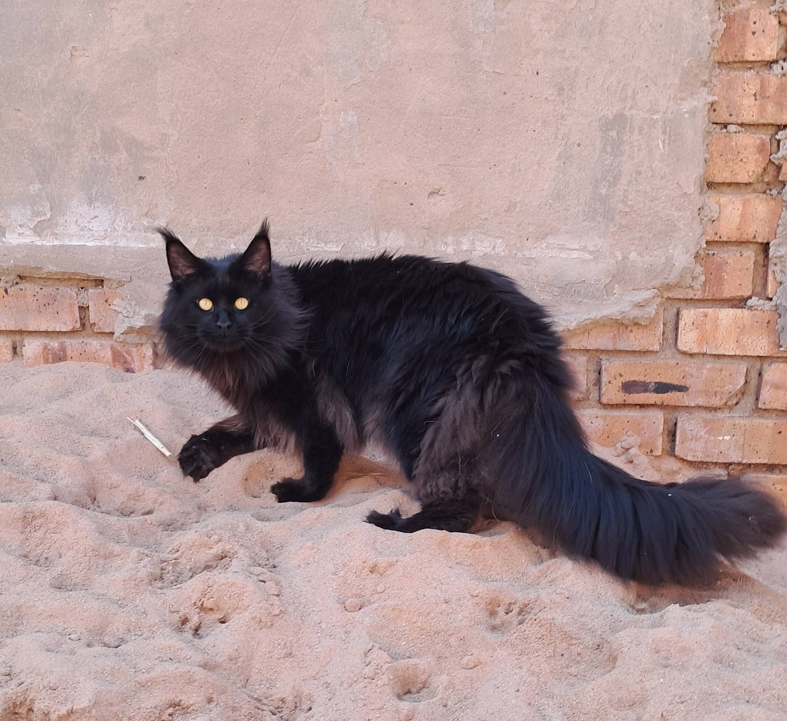
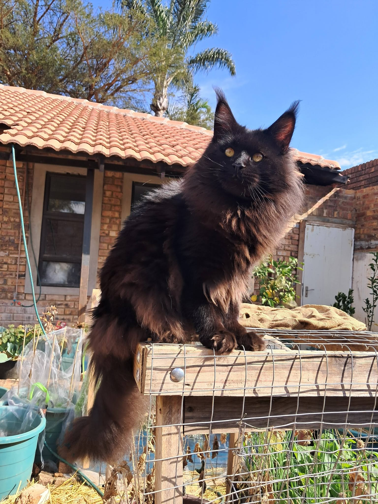

Meet the gentlemen who are currently part of the Sparkle Coon breeding program.
CURRENT STUD
Thunder is a very affectionate and gentle boy who genuinely enjoys attention from people. He has a calm and easy-going nature around the other cats and is especially gentle with the girls. He does, however, have a particular dislike for Nurgani (Teddy), so the two of them prefer to keep their distance from one another. Thunder has always been an intelligent and curious boy. When he was younger, he even enjoyed going for walks on a leash. He is also rather talented when it comes to getting into places he shouldn't — he taught himself how to turn keys with his mouth and figured out how to open his own window! Needless to say, we eventually had to bolt the window shut to keep our clever boy safely inside.
Colour: Blue Classic Tabby
Paws: Polydactyl
CURRENT STUD
Lucky is a sweet and affectionate boy who enjoys attention, especially when it comes from the ladies. He can be somewhat reserved at times and prefers to take things at his own pace rather than always being the centre of attention. Once comfortable, his softer and more affectionate side comes through. He has a calm, gentle presence and is particularly fond of spending time around the girls.
Colour: Black Classic Tabby
Paws: Standard
CURRENT STUD
Our russian imported stud, Nurgani is a very affectionate boy who enjoys attention, but his true weakness has always been the girls. He absolutely adores them and can be quite the flirt! He is generally easy-going and happy to go with the flow, although he certainly has his demanding moments when he wants something. With his fluffy winter coat and cuddly appearance, it is no surprise that he earned the nickname “Teddy Bear.”
Colour: Black Silver Ticked Tabby (High Grade Silver)
Paws: Standard




CURRENT STUD
Damion, aka Leeu, is our youngest stud and is just over a year old. He is an energetic and playful boy who enjoys attention and loves being involved in whatever is happening around him. He has a particularly playful side and will happily chase after a little ball of crumpled-up paper, often bringing it back to be thrown again. Damion also has his own rather unusual way of asking for affection — at times, he enjoys being carried around the neck like a fluffy scarf! He is a fun-loving young boy with plenty of energy and personality, and we are looking forward to watching him mature into himself.
Colour: Solid Black
Paws: Standard
Website made by Michelle van Vuuren